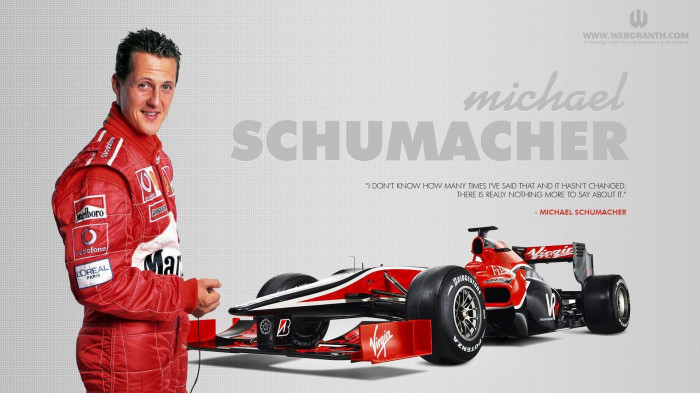
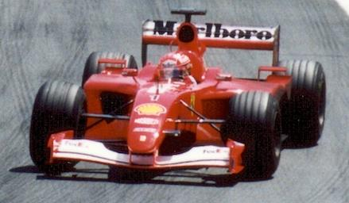

Michael Schumacher (/ˈʃuːmɑːkər/; German: [ˈmɪçaːʔeːl ˈʃuːmaxɐ]> (listen); born 3 January 1969) is a German former racing driver who competed in Formula One for Jordan, Benetton, Ferrari, and Mercedes. Schumacher has a joint-record seven World Drivers' Championship titles (tied with Lewis Hamilton) and, at the time of his retirement from the sport in 2012, he held the records for the most wins (91), pole positions (68), and podium finishes (155)—which have since been broken by Hamilton—while he maintains the record for the most fastest laps (77), among others.
After beginning his racing career in karting, Schumacher enjoyed success in several junior single-seater series. After a one-off Formula One appearance with Jordan at the 1991 Belgian Grand Prix, Schumacher was signed by Benetton for the rest of the 1991 season. He won his first and second drivers' titles consecutively in 1994 and 1995. Schumacher moved to the struggling Ferrari team in 1996. During his first years at the team, Schumacher lost out on the title in the final race of the season in 1997 and 1998 and suffered a broken leg from a brake failure in 1999. He and Ferrari won five consecutive titles from 2000 to 2004, including unprecedented sixth and seventh titles, breaking several records. After finishing third in 2005 and second in 2006, Schumacher retired from the sport, although he later made a brief return with Mercedes from 2010 to 2012.
Schumacher was noted for pushing his car to the very limit for sustained periods during races, a pioneering fitness regimen and ability to galvanise teams around him. He and his younger brother Ralf are the only siblings to win races in Formula One and the first siblings to finish first and second in the same race, a feat they repeated in four subsequent races. Over his career, Schumacher was involved in several controversial racing incidents. Twice, he was involved in collisions in the final race of a season that decided the title: first with Damon Hill at the 1994 Australian Grand Prix, and later with Jacques Villeneuve at the 1997 European Grand Prix.
An ambassador for UNESCO, Schumacher has been involved in humanitarian projects and has donated tens of millions of dollars to charity. In December 2013, Schumacher suffered a severe brain injury in a skiing accident. He was placed in a medically induced coma until June 2014. He left the hospital in Grenoble for further rehabilitation at the Lausanne University Hospital, before being relocated to his home to receive medical treatment and rehabilitation privately in September 2014.
 Michael Schumacher was born in the West German town of Hürth, North Rhine-Westphalia, on 3 January 1969, to working-class parents Rolf—a bricklayer who later ran the local kart track—and Elisabeth Schumacher, who operated the track's canteen.[1] When Schumacher was four, his father modified his pedal kart by adding a small motorcycle engine. After Michael crashed it into a lamp post in Kerpen, his parents took him to the karting track at Kerpen-Horrem, where he became the youngest member of the karting club. His father built him a kart from discarded parts and, at the age of six, Schumacher won his first club championship. To support his son's racing, Rolf took on a second job renting and repairing karts, while his wife worked at the track's canteen. Nevertheless, when Michael needed a new engine costing 800 DM, his parents were unable to afford it; he was able to continue racing with support from local businessmen.[2] Regulations in Germany require a driver to be at least 14 years old to obtain a kart license. To get around this, Schumacher obtained a license in Luxembourg at the age of 12.[3] In 1983, he obtained his German license, a year after he won the German Junior Kart Championship. Schumacher joined Eurokart dealer Adolf Neubert in 1985 and by 1987, he was the German and European kart champion, then he quit school and began working as a mechanic. In 1988, he made his first step into single-seat car racing by participating in the German Formula Ford and Formula König series, winning the latter.[4] In 1989, Schumacher signed with Willi Weber's WTS Formula Three team. Funded by Weber, he competed in the German Formula Three series, winning the title in 1990.[3] He also won the 1990 Macau Grand Prix under controversial circumstances. He placed second behind Mika Häkkinen in the first heat, three seconds behind. At the start of the second heat, he overtook Häkkinen, who only had to finish within three seconds of Schumacher to clinch the overall win. In the closing laps, Schumacher made a mistake, allowing Häkkinen to attempt to overtake. Michael changed his line immediately before Häkkinen did the same as the latter moved to overtake, and Häkkinen crashed into the back of Schumacher's car.[5] While Häkkinen's race was ended, Schumacher drove to victory without a rear wing.[6] During 1990, along with his Formula Three rivals Heinz-Harald Frentzen and Karl Wendlinger, he joined the Mercedes junior racing programme in the World Sportscar Championship. This was unusual for a young driver: most of Schumacher's contemporaries competed in Formula 3000 on the way to Formula One. However, Weber advised Schumacher that being exposed to professional press conferences and driving powerful cars in long-distance races would help his career.[3] In the 1990 World Sportscar Championship season, Schumacher won the season finale at the Autódromo Hermanos Rodríguez in a Sauber–Mercedes C11, and finished fifth in the Drivers' Championship despite only driving in three of the nine races. He continued with the team in the 1991 World Sportscar Championship season, winning again at the final race of the season at Autopolis in Japan with a Sauber–Mercedes-Benz C291, leading to a ninth-place finish in the Drivers' Championship. He also competed at Le Mans during that season, finishing fifth in a car shared with Wendlinger and Fritz Kreutzpointner. In 1991, he competed in one race in the Japanese Formula 3000 Championship, finishing second.[4] During the 1991 430 km of Nürburgring, Schumacher was involved in a serious incident with Derek Warwick. While trying to set his flying lap in qualifying, Schumacher encountered Warwick's Jaguar on a slow lap resulting in lost time for Schumacher. As retaliation for being in his way, Schumacher swerved his Sauber into Warwick's car, hitting the Jaguar's nose and front wheel. Enraged by Schumacher's attitude, Warwick drove to the pits and chased Schumacher on foot. He eventually caught up with Schumacher, and it took intervention from several mechanics and Schumacher's teammate Jochen Mass to prevent Warwick physically assaulting Schumacher.

Schumacher was noted throughout his career for his ability to produce fast laps at crucial moments in a race and to push his car to the very limit for sustained periods.[9] He was also noted for his pioneering fitness regimen and ability to galvanise teams around him.[10][11] In 2003, Motor Sport author Christopher Hilton observed that a "measure of a driver's capabilities is his performance in wet races, because the most delicate car control and sensitivity are needed", and noted that like other great drivers, Schumacher's record in wet conditions shows very few mistakes: up to the end of 2003, Schumacher won 17 of the 30 races in wet conditions he contested.[12] Some of Schumacher's best performances occurred in such conditions, earning him the nicknames "Regenkönig" (rain king)[13] or "Regenmeister" (rain master),[9] even in the non-German-language media. He is also known as "the Red Baron", because of his red Ferrari and in reference to the German Manfred von Richthofen, the famous flying ace of the First World War. Schumacher's nicknames also include "Schumi",[14] "Schuey"[15] and "Schu".[16]
Schumacher is often credited with popularising Formula One in Germany, where it was formerly considered a fringe sport.[17] When Schumacher retired in 2006, three of the top ten drivers in that year's Drivers' standings were German, more than any other nationality. Younger German drivers, such as Sebastian Vettel, felt Schumacher was key in their becoming Formula One drivers.[18] In 2020, Vettel named Schumacher the greatest Formula One driver of all time.[19] During a large part of his Formula One career, Schumacher was the president of the Grand Prix Drivers' Association.[20] In a 2006 FIA survey, he was voted the most popular driver of the season among Formula One fans.[21] During the same year, Formula One figures such as Niki Lauda and David Coulthard hailed Schumacher as the greatest all-round racing driver in the history of the sport.[22] In 2020, Schumacher was voted the most influential person in Formula One history.[23]